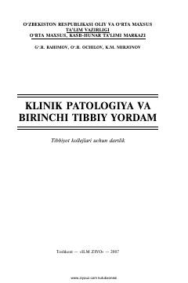

KPKlinik patologiya va birinchi tibbiy yordam ko'rsatish asoslariga bag'ishlangan qo'llanma.
Mazkur kitob klinik patologiya va bemorlarga ko'rsatiladigan birinchi tibbiy yordam asoslarini o'rganishga bag'ishlangan. Unda kasalliklarning kelib chiqish mexanizmlari va ularni bartaraf etish yo'llari ilmiy asosda yoritilgan. Asar tibbiyot xodimlari va talabalar uchun amaliy qo'llanma sifatida xizmat qiladi.